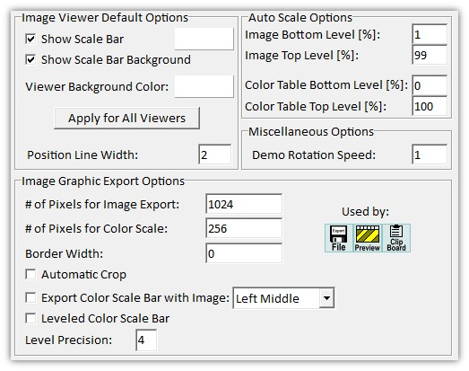

|
图像查看器选项
|

图像查看器默认选项
每次打开新的图像查看器时都会使用这些选项。
显示比例尺（复选框）：
更改比例尺的默认可见性。
默认比例尺颜色（颜色面板）：
点击彩色区域更改默认比例尺颜色。
显示带背景的比例尺（复选框）：
更改比例尺（和其他标签）半透明背景的默认可见性。
查看器背景颜色（颜色面板）：
更改图像查看器的默认背景颜色。
应用至所有查看器（按钮）
将当前默认设置应用到所有当前打开的图像查看器
位置线宽（整数编辑框）：
设置变换绘图的线宽（当您将另一个测量对象拖放到图像查看器上以查看测量位置时）。
自动标尺选项
图像底部/顶部级别（浮点编辑框）：
设置自动颜色标尺计算的底部和顶部级别。所有小于底部级别或大于顶部级别的值将被忽略。
颜色表底部/顶部级别（浮点编辑框）：
设置自动颜色标尺计算的颜色表底部和顶部级别。所有小于底部级别或大于顶部级别的值将被忽略。
杂项选项
演示旋转速度：
更改演示旋转功能的动画速度。
图像图形导出选项
图像导出像素数（整数编辑框）：
定义导出位图的像素宽度。像素高度使用当前查看器尺寸比例自动调整。
颜色标尺像素数（整数编辑框）
定义导出颜色标尺位图的像素宽度。
边框宽度（整数编辑框）
定义导出图像周围附加边框的像素宽度。
自动裁剪（复选框）：
如果勾选，导出前将自动移除白色边框。
导出时附带颜色标尺（复选框）：
如果勾选，导出图像时颜色标尺将自动导出在图像旁边。
颜色标尺位置（组合框）：
定义导出颜色标尺的位置，如果"导出时附带颜色标尺"已勾选。
均匀颜色标尺（复选框）：
如果勾选，导出颜色标尺标签的值将均匀化到绝对颜色标尺值范围（从0到<范围>）。
均匀精度（浮点编辑框）：
设置均匀标尺上显示的数字精度。